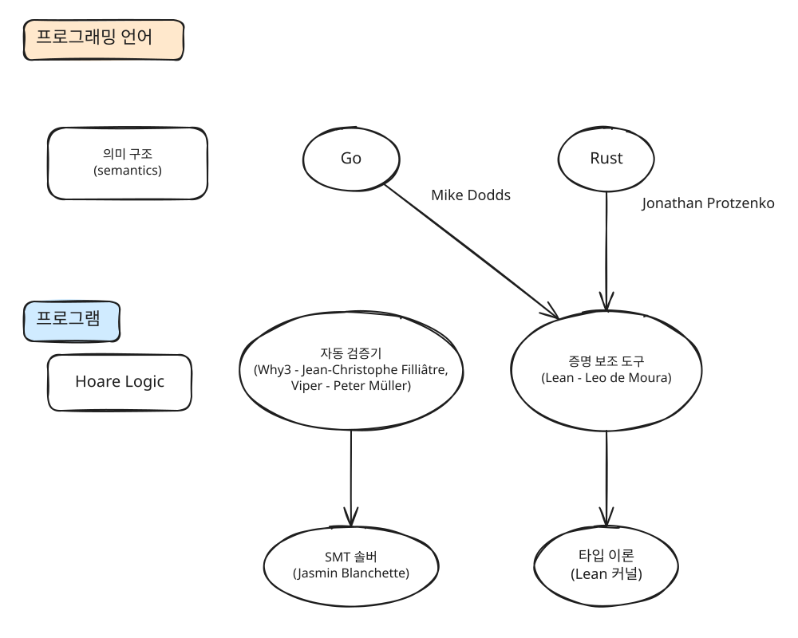
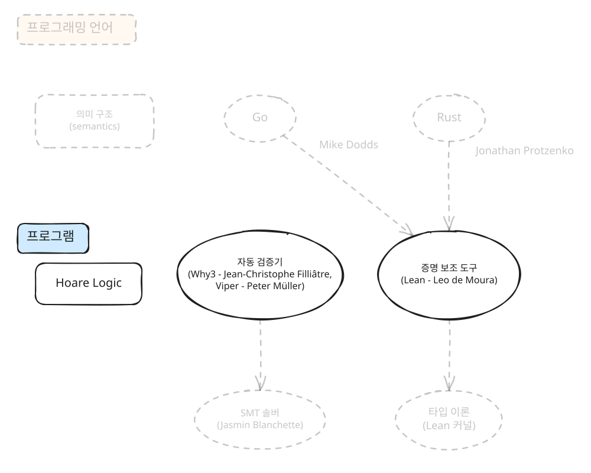
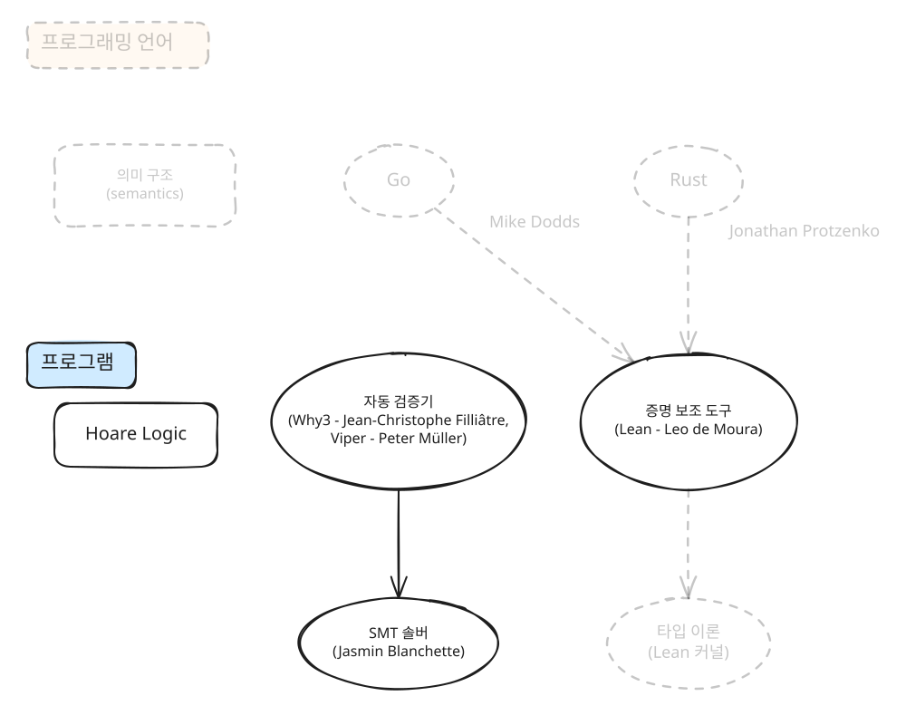
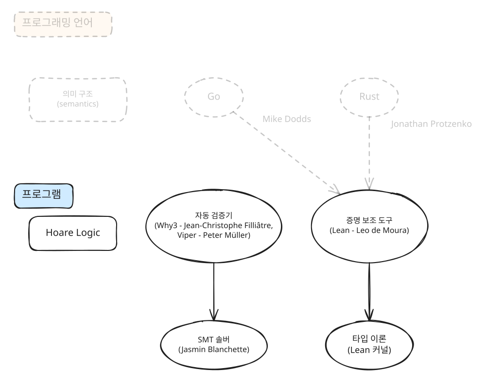
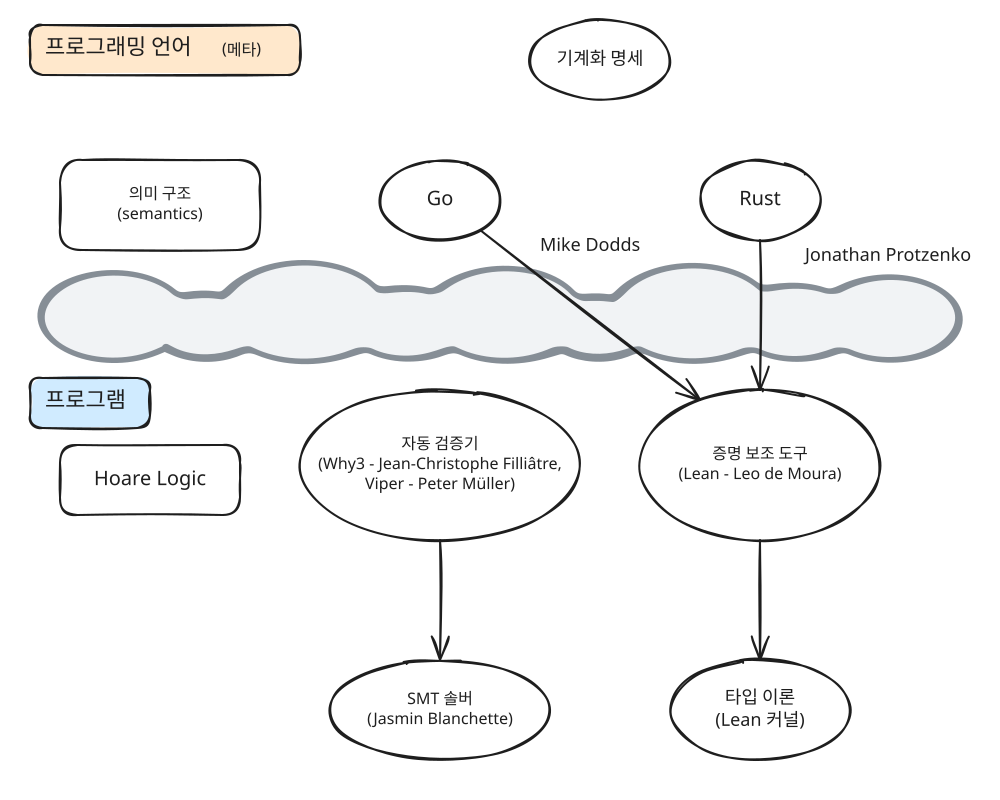
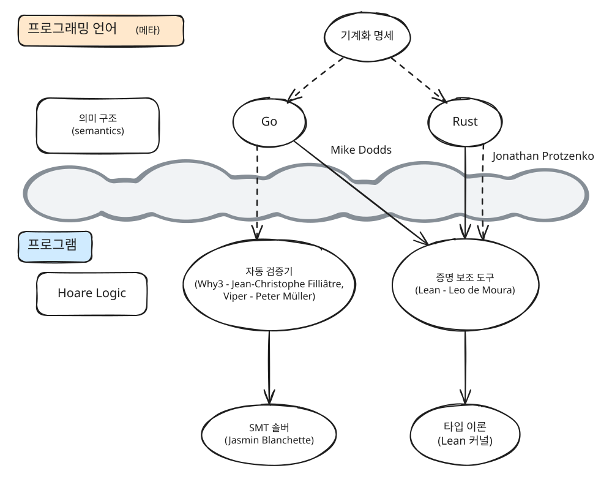

[ ← Jaehyun Lee ]
Marktoberdorf 여름학교로 알아보는 연구 지도 (地圖) 그리기
September 2026
나는 기계화 명세를 (mechanized specification) 연구하는 프로그래밍 언어 (PL) 분야 대학원생이다. 지금은 네트워크용 도메인 특화 언어인 P4 언어에 이 기술을 적용하는, P4-SpecTec이라는 연구를 진행하고 있다. 이 두 문장을 우리 연구실 동료가 읽었다면 거의 모두 이해했을 것이고, 옆 연구실 교수님은 절반 정도 이해했을 것이며, 전자과 친구가 읽었더라면 한 마디도 이해하지 못했을 것이다.
내가 PL 대학원생이며, 어떤 연구를 하고 있는지 다른 사람에게 설명하기란 어려운 일이다. PL이 무엇을 다루는지 다른 사람에게 설명하는 것부터 매우 어렵다. 내 경험을 바탕으로 한, PL을 설명하는 안 좋은 시나리오 중 일부는:
나: 저는 PL 연구를 하는 대학원생이에요.
(A) 상대: 프로그래밍 언어를 만들어요?
(A) 나: 아, 그건 아니고...
(B) 상대: 어떤 프로그래밍 언어를 연구해요? C? Python?
(B) 나: 아..., 저는 P4라고 하는 특이한 언어를 연구해요. (P4를 설명해야 하나 고민중)
(C) 상대: 아, 언어학이랑 비슷한 거에요?
(C) 나: 저는 언어학 공부 안 해서 잘 모르겠는데요? 비슷할까요?
간혹 인내심 좋은 사람을 만나면 다음과 같이 설명할 기회를 얻기도 한다:
(D) 나: 프로그래밍 언어의 동작 원리를 엄밀하게 기술할 수 있는데, 제가 하는 일은 이 엄밀하게 기술한 명세와 구현체의 행동이 일치하는지 기계화 명세를 통해 [...] (나도 만족스럽지 않고, 인내심 좋은 상대도 흥미를 잃는다.)
가끔은 내 연구를 아주 많이 요약해서 다음과 같이 설명한다:
(E) 나: 저는 남이 짠 코드에서 오류를 자동으로 찾는 연구를 해요. (속으로는 ‘사실 완전 그런건 아닌데...’ 생각함)
내 실력이 부족한 탓에 지금껏 한 번도 내가 하는 연구 분야에 대해서, 컴퓨터 과학을 하지 않는 사람에게 만족스러운 설명을 한 적이 없다. 내 설명이 부족한 탓에 부모님도, 여자친구도, 내가 정확히 어떤 연구를 하고 있는지 잘 모른다. 나만의 고민 같지는 않고, PL 연구를 하는 사람들 대부분 PL이 무엇인지 설명하는 것을 어려워하는 듯하다.
같은 고민을 안고 있는 PL 연구자끼리 만나면 이야기가 물 흐르듯 오갈까? PL 연구자들이 모이는 PLDI, OOPSLA 학회에 참석한 경험에 비추어 보면, 꼭 그렇지는 않았다. 물론 PL 연구가 참 요상하고, (속세/엄청난 부와 다소 거리가 있다는) 공감대가 있지만, 서로의 세부 연구 분야를 이해하기 위해서는 무수한 질답이 필요했다.
나: 저는 P4 라는 언어에 기계화 명세 기술을 적용하는 P4-SpecTec 이라는 연구를 진행하고 있어요.
상대: P4가 뭐에요?
나: P4는 네트워크 스위치를 프로그래밍하기 위한 도메인 특화 언어로 [어쩌고 저쩌고...]
상대: 기계화 명세 기술이 뭐에요?
나: 언어의 명세를 pencil-and-paper 가 아니라, 컴퓨터가 읽을 수 있는 메타 언어로 작성하여 [어쩌고 저쩌고...]
상대방의 말을 이해하는 데도 상당한 노력이 필요하다. 상대가 나에게는 생소한 separation logic, information flow control, dependent type system, automata theory, set-theoretic types 등을 이야기하기 시작하면 재밌지만, 머리가 아파 온다.
8월에 참석한 Marktoberdorf 여름학교가 딱 그런 곳이었다. Marktoberdorf 여름학교는 PL, 프로그램 검증, 컴퓨터 보안을 연구하는 대학원생들이 모이는 여름학교다. Marktoberdorf라는 뮌헨 근처 조용한 동네에서 열리는데, 올해는 Marktoberdorf가 아닌 근처 Herrsching이라는 또 다른 작은 동네에서 열렸다. 평화로운 동네 속에 있어서 바캉스 같기도 했고, 달리 보면 우리 교수님을 포함한 연사 10분과 학생 약 80명이 모인 ‘PL 폐관수련’이었다. 특히 프로그램 검증을 연구하는 사람들이 많았다.
내가 연구하는 “기계화 명세”라는 것과 “프로그램 검증”은 같은 PL 범주에 속하지만, 거리가 꽤 있다. 따라서 프로그램 검증은 나에게 꽤 생소한 세상이다. 생소한 것을 연구하는 사람들 속에 열흘 동안 섞였다. 식사 시간과 쉬는 시간마다 다양한 사람들과 대화할 기회가 있었다. 꼭 연구 이야기만 하는 것이 아니라, 각자 나라의 문화와 (불가리아에서 어떤 술을 마시는지) 대학원 생활 (월급이 얼마인지) 등 사람 사는 이야기도 오갔다.
내가 잘 못하는 여러 가지 중 하나가 스몰토크다. 사는 이야기를 나누는 것이 물론 재밌지만, 영어로, 너무 뻔하지 않으며, 내 관심사와 그나마 가까운 대화를 이어나가는 것이 매우 힘들다. 그래서 어쩔 수 없이 (?) 연구 중심으로 이야기를 나눠야 했다. 서로 다른 이야기 속에서, 다른 사람들은 무슨 문제를 풀고 있고, 다른 사람들의 시각에서 본 내 연구는 어떤 연구이며, 내 연구와 프로그램 검증은 어떤 관련이 있는지 생각해 봤다.
PL 안에서 내가 어떤 연구를 하고 있고, 다른 사람들은 어떤 연구를 하고 있는지 어떻게 잘 파악할 수 있을까? 나는 “연구 지도 (地圖)” 라는 것을 그리며 PL 세상을 이해하려 한다. Marktoberdorf 여름학교에서 듣고 배운 것들을 가지고 “연구 지도” 이야기를 풀어 보려 한다.
제대로 읽어 본 적은 없지만, 《지적 대화를 위한 넓고 얕은 지식》이라는 책 시리즈가 있다. 이 글에서 이야기할 연구 지도는, 《PL 대화를 위한 넓고 얕은 지식》이다. PL 분야의 다양한 강의를 듣고, 사람들을 만나 이야기를 하다 보면, 같은 PL 이라는 틀 안에서 어떤 문제를, 어떤 방법으로 풀고 있는지에 따라 나름의 그룹을 지을 수 있게 된다. 이런 그룹들을 모으면, 비슷한 세부 분야의 연구를 하는 작은 논리적인 동네들을 상상하게 된다. 예컨대 증명 보조 도구로 프로그램 검증을 하는 동네, 뉴로심볼릭 프로그래밍을 연구하는 동네 등.
PL 분야에 어떤 동네들이 있고, 각 동네가 어떻게 연결되어 있는지 그린 것을 “연구 지도”라 하겠다. 나만의 연구 지도는 《PL 대화를 위한 넓고 얕은 지식》이 되어 스몰토크를 어떻게 이어나갈지 치열한 고민 없이도 재미있는 대화를 도와 준다. 또, 연구 지도는 서로 다른 동네를 연결하는 새로운 아이디어를 떠올릴 수 있는 도구가 되기도 한다.
지금까지 이야기한 “연구 지도”가 아직 추상적이라, Marktoberdorf 여름학교에서 그린 “프로그램 검증” 이라는 주제에 대한 연구 지도를 먼저 소개한다1:

이 글은 연구 지도가 무엇이고, 이걸 어떻게 그리는지에 대한 글이기 때문에, 강의를 통해 배운 기술적인 내용은 아주 많이 뭉뚱그려 설명하려 한다. 따라서 앞으로 나올 내용은 위 연구 지도의 구성 요소가 무엇인지 대강 이해할 만큼의 짧은 배경 지식과, 여름학교에서 접한 다양한 연구가 분류되고 연결되는 성글고 큰 흐름으로 구성했다.
이 연구 지도의 바탕이 되는 아이디어는 Hoare logic을 이용한 프로그램 검증이다. Hoare logic은 프로그램의 성질에 대해 논증할 수 있도록 해 주는 도구다. 핵심은 다음과 같이 쓰는 Hoare triple이다:
\[\{P\}\ C \ \{Q\}\]
구성 요소가 \(P\), \(C\), \(Q\) 3개라 triple이라 부른다. 셋 중 \(C\)는 논증 대상 프로그램이다. 이 Hoare triple이 말하는 바는, “만약 프로그램 \(C\)를 실행하기 전 \(P\)라는 논리적 성질이 성립하면, \(C\)를 실행한 이후에는 \(Q\)라는 성질이 성립한다.” 는 내용이다. 예를 들어:
\[\{y \text{ is odd}\} \ x := y + y \ \{x \text{ is even} \ \land \ y \text{ is odd}\}\]
만약 “\(x\)는 \(y\) 더하기 \(y\)” 프로그램을 실행하기 전에 \(y\)가 홀수였다면, 실행 이후에는 \(y\)는 변함없이 홀수이며, \(x\)는 짝수다. 홀수끼리 덧셈은 짝수니까, 이 Hoare triple은 맞는 말을 하고 있다.
\(P\)와 \(Q\)는 프로그램 \(C\)와는 다른 범주에 있다. \(C\)는 우리가 실행할 프로그램인 반면, \(P\)와 \(Q\)는 그 프로그램의 논리적 성질을 이야기한다. 따라서, \(P\), \(Q\)를 묶어 “프로그램 명세”라고 부른다. 즉, Hoare logic은 논리 세상에 있는 프로그램 명세와, 프로그래밍 언어로 작성한 실제 프로그램을 연관 짓는 역할을 해 준다. 다시 말해, Hoare logic은 프로그램을 논리적으로 해석하는 틀인 셈이다.
프로그램 검증 분야에서 다루는 진짜 프로그램 명세는 물론 위 예시처럼 자명하지 않다.
\[\{P\} \ \cdots \text{a long and complex code} \cdots \ \{Q\}\]
Hoare logic을 가지고 이 Hoare triple을 해석하면, 검증 조건이라는 (Verification Condition; VC) 크고 복잡한 논리식이 나온다. 이 VC가 참이면 Hoare triple이 참이라서 프로그램 명세가 맞는 말을 하고 있는 것이다.

“크고 복잡한 VC를 누가 어떻게 풀어야 하는가?”에 대한 접근 방식에 따라 프로그램 검증 동네는 다시 자동 검증기 동네와 증명 보조 도구 동네로 나뉜다. 전자의 경우, 자동 논리식 계산기인 SMT 솔버의 도움을 받아 VC를 푼다. 물론 자동 계산이 공짜는 아니다. 완전 자동으로 논리식을 풀다 보니 컴퓨터가 막혀 답을 못 내기도 한다. 그래서 증명 보조 도구 동네는 사람이 컴퓨터와 협업하며 반자동으로 VC를 푼다.
자동 검증기 동네에서는 자동 논리식 계산기인 SMT 솔버를 활용해 VC를 자동으로 푼다. 아까 홀수 덧셈 예시를 다시 보면, SMT 솔버에게 대강 다음과 같은 VC를 자동으로 풀라 시키는 것이다.
\[\mathsf{VC} = \forall x, y, a\in \mathbb{Z}. (y = 2a + 1 \ \wedge \ x’ = y + y) \implies \exists b, c \in \mathbb{Z}. x’ = 2b \ \wedge \ y = 2c + 1\]
좀 더 정확히는, \(\mathsf{VC}\)의 부정인 \(\neg\mathsf{VC}\)에 해가 있는지를 SMT 솔버에게 물어보고 (즉, \(\mathsf{VC}\)에 반례가 있는지), SMT 솔버가 “반례 없음”이라 대답하면 \(\mathsf{VC}\)가 참이라서 검증에 성공한다. Marktoberdorf 여름학교에서는 대표적인 자동 검증기인 Why3와 Viper를 개발하신 Jean-Christophe Filliâtre 교수님과 Peter Müller 교수님이 강의를 해 주셨다.
Viper는 특히 Hoare logic의 확장판인 separation logic을 기반으로 프로그램의 성질을 명세한다. Separation logic은 Hoare logic에 얹어서, 프로그램이 사용하는 컴퓨터의 메모리 상태에 대해서도 논증을 쉽게 할 수 있도록 해 준다. C와 포인터를 조금 안다면:
\[\{(*y) \text{ is odd}\} \ (*x) := (*y) + (*y) \ \{(*x) \text{ is even} \ \land \ (*y) \text{ is odd}\}\]
이 Hoare triple은 맞는 말처럼 보이지만, 만약 \(x\)와 \(y\) 포인터가 같은 메모리 주소를 가리킨다면, 실행 이후 \((*y)\text{ is odd}\)가 성립하지 않게 된다. 이 글에서 더 자세히 다루지는 않겠지만, separation logic은 이런 상황을 잘 다룰 수 있는 도구를 제공한다.

자동 검증기 동네의 근본을 따라 내려가면 SMT 솔버 동네가 있다. 여기서 하는 것은 “어떻게 논리식을 자동으로 (잘) 풀까”를 고민하는 것이다. SAT 솔버가 \(x\), \(y\), \(\top\), \(\bot\), \(\land\), \(\lor\), \(\neg\) 로만 이뤄진 단순 Boolean 논리식을 푼다면, SMT 솔버는 조금 더 복잡하고 유용한 논리식을 다룬다. 예를 들어, 프로그램에서 자주 다루는 bit-vector를 사용한 논리식을 쓸 수 있다: \(x = 0101_2 \land z = x \ \text{xor} \ y \ \dots\). 여름학교에서는 Jasmin Blanchette 교수님께서 Ground Resolution/Saturation 이라는 방법을 통해 first-order 논리식을 푸는 방법과, 이를 더 복잡하면서 유용한 higher-order 논리식으로 확장하는 방법을 소개하셨다.

자동 검증기 동네와 약간 다른 방향으로, 증명 보조 도구를 활용한 프로그램 검증 동네도 있다. 증명 보조 도구는 코딩하듯 증명을 작성할 수 있게 도와주는 도구로, 작성한 증명에 논리적 오류가 없다는 것을 기계적으로 확인해 준다. 따라서 연필로 종이에 쓴 증명보다 더 믿을 만하다는 강점이 있다.
증명 보조 도구는 페르마의 마지막 정리2와 같은 수학 증명 등 다양한 맥락에서 사용되는데, 프로그램 검증 맥락에서는 사람이 컴퓨터의 도움을 받아 반자동으로 Hoare 논리로부터 가져온 VC를 푼다. 즉, VC가 맞다는 증명을 작성하는 셈이다. 증명 보조 도구에는 대표적으로 Rocq과 Lean이 있는데, 이번 여름학교에는 Lean을 개발하신 Leo de Moura 박사님이 오셔서 Lean 강의를 하셨다.
자동 검증기 동네를 타고 내려가면 SMT 솔버 동네가 있듯이, 증명 보조 도구도 소위 “근본”이 되는 동네가 있으니, 바로 타입 이론 동네이다. 논리적 명제와 증명 사이의 관계를 타입과 프로그램 (Term) 사이의 관계로 환원할 수 있다3. Lean으로 쓴 증명은 프로그램이고, 명제는 그 타입이다. Lean 커널은 그 프로그램이 그 타입을 갖는지 검사함으로써 증명-명제 쌍의 정확성을 확인한다.
앞선 문단에서 Hoare logic에 대한 설명을 다시 가져오면:
즉, Hoare logic은 논리 세상에 있는 프로그램 명세와, 프로그래밍 언어로 작성한 실제 프로그램을 연관 짓는 역할을 해 준다. 다시 말해, Hoare logic은 프로그램을 논리적으로 해석하는 틀인 셈이다.
“프로그래밍 언어로 작성한 프로그램과 논리 명세를 연결한다” 가 무슨 느낌인지 조금만 더 자세히 알아보자. 새로운 Hoare triple을 하나 보자:
\[\{y \text{ is odd}\} \ x := y \ \clubsuit \ y \ \{x \text{ is even} \ \land \ y \text{ is odd}\}\]
아까 \(+\)는 “덧셈”으로 쉽게 읽었는데, \(\clubsuit\) 연산자의 의미는 분명하지 않다. \(\clubsuit\)의 의미는 프로그래밍 언어가 부여한다. 프로그래밍 언어가 정하는 규칙에 따라 \(+\)에는 “덧셈”이라는 의미를 부여하고, \(\clubsuit\)에는 예컨대 “좌항에 우항을 곱하고, 그 결과에 다시 우항을 더하기” 라는 의미를 부여할 수 있다. 이것을 프로그래밍 언어의 의미 구조라고 (semantics) 부른다.
프로그램 검증을 하기 위해서는 어떤 논리적 프로그램 명세가 프로그램의 의미에 부합한다는 것을 보여야 한다. 그리고 그 프로그램의 의미는 결국엔 프로그래밍 언어의 의미 구조가 부여한다.
우리에게 익숙한 C, Python, Rust, Go 등 언어는 아주 크고 복잡하다. 예를 들어, C의 의미 구조를 설명하는 C99 설명서는 거의 500쪽에 달한다. Rust는 아직 완성된 공식 언어 명세가 없지만, 잠깐 써 봤더라면 그 의미 구조가 얼마나 복잡할지 상상할 수 있을 것이다.
따라서, 자동 검증기를 쓰든, 증명 보조 도구를 쓰든 주어진 프로그램과 논리 명세를 가지고 VC를 만들어 내기 위해서는 프로그래밍 언어 의미 구조가 꼭 필요하다. Python에 대한 프로그램 검증을 하고 싶다면, Python의 의미 구조에 대한 (좋은) 이해를 바탕으로 VC를 생성해야 한다.
다시 연구 지도로 돌아와서, 연구는 동네와 동네를 연결하는 도로에서도 찾을 수 있다. 여름학교에서 Jonathan Protzenko 박사님은 Rust 프로그래밍 언어에 대해서, Lean 기반의 프로그램 검증 연구를 소개하셨다4. Rust의 의미 구조 동네와 프로그램 검증 속 증명 보조 도구 동네를 연결하는 도로를 놓은 셈이다. Mike Dodds 박사님은 AI를 활용한 프로그램 검증에 대한 이야기를 해 주셨는데, 그 중에는 AI로 개발한, Lean을 활용한 Go 검증기가 있었다5. 이것도 비슷하게 Go 의미 구조 동네와 증명 보조 도구 동네를 이어 준다.
이 연구 지도에서 내 연구의 위치는 어디일까? 나는 어느 동네에 살고 있을까? 다시 이 글의 맨 앞으로 돌아가서:
나는 기계화 명세를 (mechanized specification) 연구하는 프로그래밍 언어 (PL) 분야 대학원생이다.
좀 더 자세히 풀어 쓰면, 기계화 명세 기술은 프로그래밍 언어의 의미 구조를 컴퓨터로 엄밀하게 작성할 수 있게 하는 기술이다. 증명 보조 도구가 증명을 컴퓨터가 검사할 수 있는 형태로 옮겨 주듯, 기계화 명세는 언어 명세를 컴퓨터가 읽고 검사할 수 있는 형태로 옮겨 준다. 이 연구의 의미는 다음과 같다.
\[\text{Define }v_1 \ \clubsuit \ v_2 \ \rightarrow v \text{ , where } v = (v_1 * v_2) + v_2\]
\[\text{Define }v_1 \ \clubsuit \ v_2 \ \rightarrow v \text{ , where } v = (v_1 * v_3) + v_2\]
의미 구조를 컴퓨터로 기술하므로, 의미 구조 자체를 컴퓨터로 가공 및 해석할 수 있다. 예를 들어, 기계화 명세를 사람이 읽기 좋은 자연어 문서로 바꿀 수 있다. 위에 있는 \(v_1\ \clubsuit \ v_2\)는 매우 간단하긴 하지만, 자연어 명세로 바꾼다면 아래와 같고, 분명 개발자가 더 읽고 이해하기 좋은 형태가 된다.
더 나아가서, 기계화 명세 자체를 실행할 수도 있다. “(기계화) 명세 실행” = “프로그래밍 언어의 의미 구조 실행” = “프로그램 실행기” 이므로, 기계화 명세 실행으로 명세에 정의된 언어에 대한 실행기를 얻을 수 있다.
그래서 내가 진행하는 P4-SpecTec이라는 연구는 P4 언어에 대한 기계화 명세를 작성해서, P4 언어 명세를 체계적으로 관리하고, 여기서부터 자연어 명세 문서와 실행기를 만들어 내는 연구다.
기계화 명세 연구는 연구 지도 맨 위에 그려 볼 수 있다. 기계화 명세 연구는 한 단계 위의, “메타 동네”에 있다. Why3, Lean 동네는 프로그램을 연구 대상으로 취급하고, 기계화 명세는 프로그래밍 언어 명세를 연구 대상으로 취급한다는 점에서 둘이 다루는 대상이 다르다. 둘을 구분짓기 위해 중간에 구름을 뒀다.

연구 지도를 그려 보면 PL에는 어떤 연구 동네가 있고, 어떤 동네들이 새롭게 도로로 연결될 수 있는지 보인다. 지도를 돌아 보면 자동 검증기, 증명 보조 도구, SMT 솔버, 타입 이론, 프로그래밍 언어 의미 구조와 같은 큼직한 아이디어들이 어떻게 연결되고, 상호작용하는지 보인다.
내가 사는 동네에서 다른 동네의 아이디어를 빌려 와서 문제를 풀 수도 있고, 멀리 떨어진 두 동네가 왕래할 수 있는 길을 놓는 것도 상상해 볼 수 있다.
프로그래밍 언어의 의미 구조를 체계적으로 가공할 수 있는 기계화 명세 기술을 가지고 있으면, 프로그래밍 언어의 의미 구조 동네와 프로그램 검증 동네 사이 구름을 뚫는 새로운 도로를 만들 수 있지 않을까 상상해 본다. Jonathan Protzenko, Mike Dodds 박사님의 Rust, Go 검증기는 각각 Rust, Go의 의미 구조에 대한 사람/AI의 이해를 바탕으로, Rust/Go에서 프로그램 검증으로 가는 다리를 “직접” 놓는다. 기계화 명세 맥락에서는 컴퓨터도 의미 구조를 다룰 수 있게 되고, 각 프로그래밍 언어와 프로그램 검증 동네를 “자동으로” 이어 주는 방법을 생각해 볼 수 있다6.

글 전반에 걸쳐 “명세”라는 단어가 여러번 나왔다. 나는 기계화 “명세” 연구를 하고, 내가 참석한 Marktoberdorf 여름학교에서는 Hoare logic의 프로그램 “명세”를 다뤘다. 여기서 큰따옴표 친 두 “명세”는 서로 다르다. 프로그램 명세는 말 그대로 프로그램의 행동을 기술하는 명세고, 내가 연구하는 것은 언어 명세로, 프로그래밍 언어의 의미 구조를 기술하는 명세다. 후자는 “메타 동네”에 있는 것으로, 층위가 다르다.
연구 지도를 생각하고 그리면서 배우는 점은, 같은 단어도 동네에 따라 해석이 다르다는 점이다. 우리 연구실 안에서는 “명세”라 하면 누구나 언어 명세를 떠올리지만, 프로그램 검증 동네 사람들은 “명세”에 대해 다른 생각을 가지고 있다. 그러므로 프로그램 검증을 하는 사람들을 만나면 내가 “언어 명세” 연구를 한다고 처음부터 명확히 해야 이야기가 삼천포로 빠지는 것을 미리 막을 수 있다. 나를 알고 다른 사람을 알아야 알맞은 언어로 효과적 소통이 가능하다. 나에게 생소한 프로그램 검증 동네 사람들과 섞여 나름의 연구 지도를 그리면서 얻은 교훈이다.
더불어, 대학원 생활과 연구는 정량적인 성적이나 숫자가 나오지 않기 때문에 내 성장을 가늠하기 어려운데, 연구 지도를 그리는 과정에서 매년 학회에서 알아듣는 단어가 하나둘 늘어가는 것을 느끼며 약간의 자기 효능감을 느낀다.
글을 다 쓰고 보니 당연한 이야기를 길게 풀어 쓴 것 같기도 하다. 약간의 실용성을 더하기 위해 나름의 연구 지도 그리는 팁을 공유한다:
학회에서 - 다양한 사람들과 (교수님의 도움을 받아) 이야기하기 | 나는 그리 외향적인 사람은 아니다. 그런데 정말 안타깝게도 (...) 세상에 어떤 연구가 있는지 가장 효과적으로 이해하는 방법은 다른 사람을 만나서 이야기하는 것이다. 일대일 대화이기 때문에 내 이해도/눈높이에 맞춰 이야기를 나눌 수 있고, 대부분의 경우 본인 연구에 애정이 있기 때문에 내가 배울 의지만 있다면 성심성의껏 설명해 준다. 내 연구에 대해서도, 다른 동네의 시각에서 피드백을 받을 수 있다. 밀착도가 높은 포스터 세션이 좋은 기회다. 학회에 가면 교수님의 도움을 받아, 다른 교수님들께 내 연구를 설명하고 홍보할 기회를 얻기도 한다. 내 연구를 다른 사람 눈높이에서 설명하면 내 연구를 객관적으로 보는 연습이 된다.
학회에서 - 세션 주제 훑어보기 | PLDI, OOPSLA 등 학회를 보면 비슷한 주제로 세션을 묶는다. 세션 주제들을 훑어 보면 어떤 동네들이 있는지 조금씩 눈에 익는다. 예를 들어, 아래는 PLDI’26 학회 첫날 세션 제목 목록이다:
어차피 내 연구와 직접적인 관련이 있는 세션/발표가 아니라면 내용을 제대로 알아듣기 어려우니, 한 세션 정도는 아예 새로운 세션에 들어가 보는 것도 방법이다. 그래도 발표 앞 1분 정도의 introduction 까지는 이해할 만 하다. 올해 PLDI 학회에서는 이런 방법으로 choreographic programming이 무엇인지 대강 배워 볼 수 있었다.
연구실에서 - 다른 연구실 홈페이지 구경하기 | Claude Code, Codex가 코딩의 대부분을 대신 해 주니까 딴짓을 하기 정말 좋은 환경이다. 나는 나름 유용한 딴짓이라 생각하며 주로 다른 연구실 홈페이지와 블로그를 읽는다. 누가 어떤 연구를 하고 있는지 볼 수 있고, 딴짓이 축적되면 누가 어떤 연구를 새로 시작했으며 그만뒀는지도 읽을 수 있다.
마치며, 견문을 넓힐 수 있는 다양한 기회를 주신 류석영 교수님과 많은 것들이 생소했던 Marktoberdorf 여름학교에서 새로움을 함께해 준 석훈이에게 감사를 전합니다.
John Mitchell, Alexander Pretschner 교수님은 각각 AI 보안, CPS(Cyber Physical System)에 대한 integration testing 을 주제로 재미있는 강의를 해 주셨는데, 프로그램 검증과는 약간 거리가 있다 생각하여 지도에서 제외했다. Orna Grumberg 교수님은 CHC(Constrained Horn Clause) 기반 프로그램 자동 검증 이야기를 해 주셨고, 연구 지도 단순화를 위해 제외했다.↩︎
물론 AI가 두 동네를 “자동으로” 이어 줄 수 있겠지만, AI의 문제는 이것이 비결정적 (non-deterministic) 하다는 데 있다. 자동이긴 한데, 매번 서로 다른 도로가 나온다는 의미다.↩︎
[ ← Jaehyun Lee ]